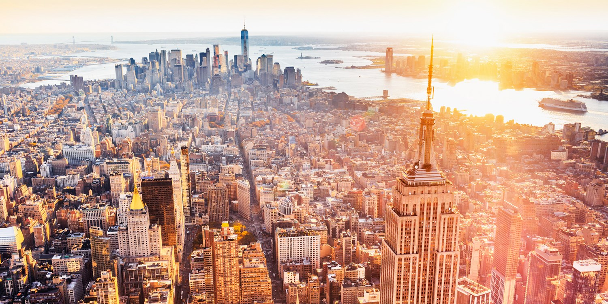

.png)
Bueno, te voy a contar de lo que hacemos en nuestros cursos, que podras elegir si hacerlo en virtual o presencial, pero en los examenes van a tener que ser si o si presencial. Nosotros estamos ubicados en Instituto Municipal de Arte Fotográfico y Técnicas Audiovisuales (IMDAFTA), Colón 451, B1870 Avellaneda Centro, Provincia de Buenos Aires. Tambien estamos haciendo fotografias por los parques que se encuentran en avellaneda y nos extendemos los dias Sabados y Domingo a Palermo donde estamos ya sea en el Planetario o Ecoparque de Palermo. Las edades pueden ser de apartir de 12 años para adelante. Y el pago se puede mediante efectivo, tarjeta o Mercado Pago. Puede venir a inscribirse por la pagina o por manera presencial en nuestro instituto. Los dias de clases son de Lunes a Viernes. Mañana:8:00 a 13:00 HS. Tarde: 14:00 a 19:00 HS.
¿Queres saber fotografiar?
Bueno aca te vamos a mostrar fotografias que estuvimos haciendo por todo buenos aires y esta fotografia fue de un alumno nuestro donde pudo conseguir trabajo en Estados Unidos, New York y esta fotografia es la mas famosa que hizo y que esta en todas las revistas de EEUU. Y vos podras ser el siguiente si haces nuestro cursos de fotografia!
